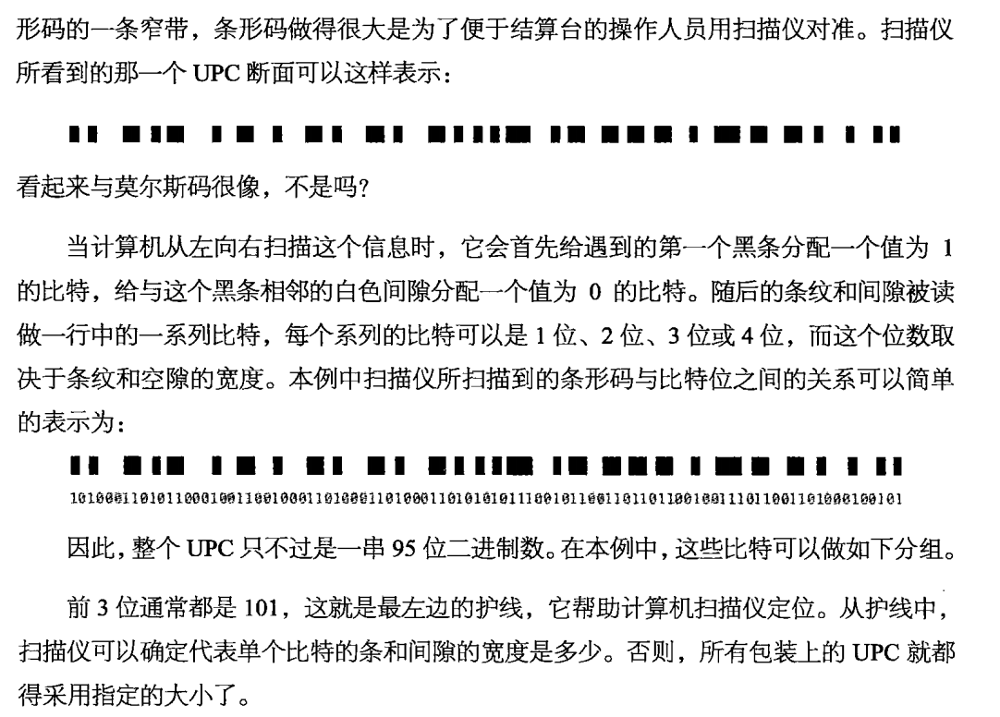
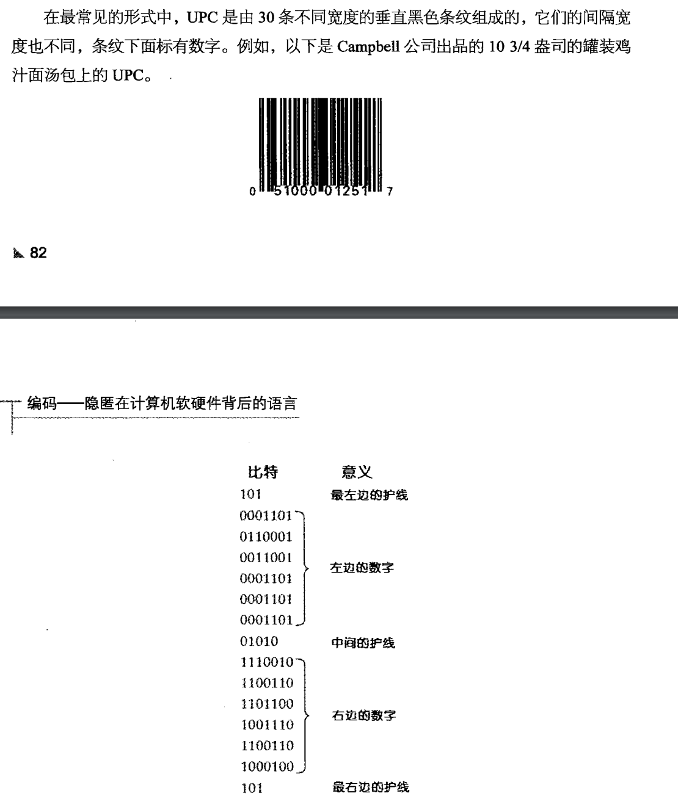
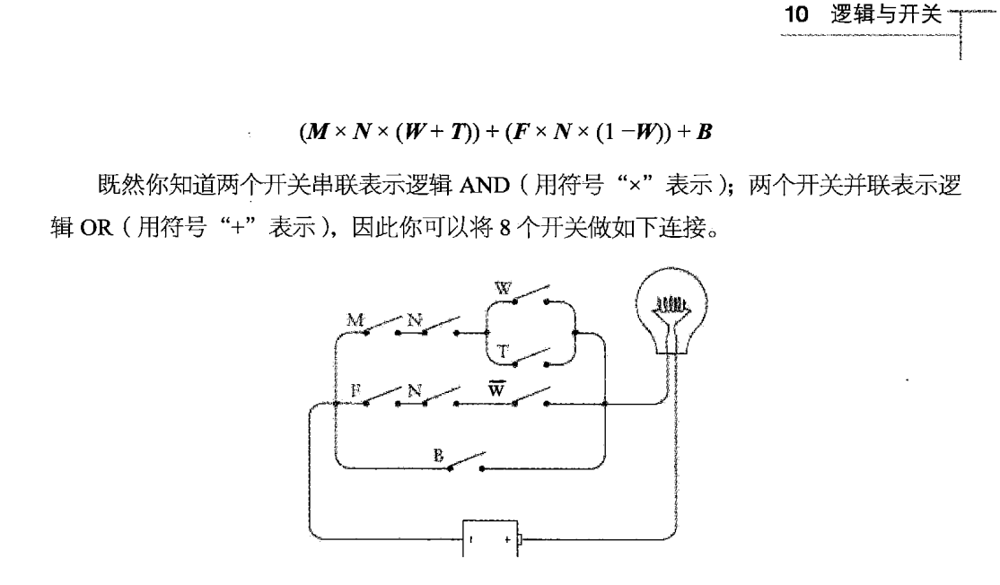

莫斯编码是国际通用的一种常见编码方式，用点划的方式来标识32种不同的字符。（包括26和英文字符和多种重读音）
- 基本规则是点（dot）和划（slash),其中划一般长度是点的三倍，而约定字符和字符之间的间隔是划的长度，单词之间的间隔是划的两倍
- 为了简化编码以及读写，将简单的字段，分配给了高频字幕，如 点代表e
- 通常来说，莫斯编码采用4位非定长信息位来表示信息，这就带来了2 + 4 + 8 + 16 = 30 位不同的信息长度
布莱叶盲人编码
布莱叶编码是一种，使用2*3（总数一共为六的信息位）来标识信息的编码方法，之所以进行这样的设计是为了便于盲人进行触摸识别信息。
- 其中存在着predence（前置码）。例如数字前置码，标识这后续的信息位用来表示数字，以及相对应的文本前置码
- 存在escape转义码，转义码之后跟着的字符会按照不同的约定规则进行解析
- 编码为了在有限的信息位中，表达尽量多组合数目（否则信息长度过大回不利于读写），可以进行去前置或转义等操作，这点在现代的计算机系统中，也深有体现
UPC 通用产品编码（超市商品的条形码）
UPC编码的启示主要是，如何利用冗余和校验，保证编码的高可用性
基本的UPC编码结构如下：
- 最左和左右是三个bit的护线，帮助扫描仪定位，便于扫描仪定位单个bit的条和间隙的宽度是多少
- 中间的护线是UPC校验码，用来辅助定位，以及验证条形码有没有被印错或是篡改。其是经过计算得出的，扫描仪根据自己扫描的结果计算，并与校验码比对
- 数字转换的二进制吗，对应到图形上，1对应黑条，0对应空白
- 左边和右边的数字，都是有两个条，且都有两个连续的1（也就是说，一个UPC数字对应的二进制至少包含2个连续的1，和一个1）
- 左边的数字，1是奇数个，右边的数字，1是偶数个。便于进行正向或是反向识别以及校验功能


二进制编码
- 古罗马数字编码，并非按照进制来进行编码，而是采用1、5、10、50这样的单位进行编码。一串古罗马数字的大小，只是相当于他们之间的所有数字的和，一串数字的大小和他们的位置没有任何关系
- 对于加法减法性能一般，不适合乘除
- 对于阿拉伯数字，数字的大小开始和他的位置相关，并且适合于乘法运算
二进制特点：
二进制是算数和电子技术之间的桥梁，开关，灯泡，电线，继电器等，都可以用二进制0和1来表示
二进制的长度增长的特别快
二进制是用来表示信息的最小单位
- 在知晓上下文的情形下，0和1两个选项就可以承载信息
UPC编码高度很大，是为了便于OCR光学识别技术进行识别，扫描设备不需要对准的非常精确，只需要覆盖一整条UPC编码就行。
二、基本电信号讲解
本章主要讲解了一些高中物理知识的电信号相关，用于后续讲解门电路做铺垫
- 可以把地球本身视作一个“导体”，严格来说，地球自身是可以作为一个电子库的。
- 不同的材料电阻性能是有区别的，电阻小的，经济的材料便是铜线
- 为了降低铺线成本，通常为了实现电流环路，不会铺来回两条线形成环路，而是两头接地，施以高压进行传输
电报机和继电器
电报 telegraph ；继电器 relay
早期发明的电报器，只是一个可以用来传递莫斯编码信息的机器
早期使用电压的高低，来进行莫斯编码传输信息
- 但是即便加以高压，因为铜线始终存在电阻，所以极限载荷距离便是几百英里左右。
- 为了解决长距离线路的电路载荷问题，开发出了“继电器”这一原件。
- 基础的继电器，只是作为电信号传导的延伸作用，起到放大因为距离而衰减的电信号的作用
三、逻辑门
逻辑运算与开关
逻辑运算亦称布尔运算，传统的代数运算是用来处理数字的，而逻辑运算处理的对象是集合
- 逻辑运算的基本运算符有3种，与或非（AND/*，OR/+，NOT/1-）
- 逻辑运算符可以分别对应到电路的串联电路，并联电路，以及反相器
- 通过将逻辑运算符对应到电路，实现了现实世界的逻辑运算转化成机器可理解的运算的过程
逻辑门（logic gates）
逻辑门的工作方式为：让电流通过或是阻止电流通过
- 一个与门、或门 包括两个继电器。（两个继电器可以类比成两个电流开关，当串联的时候就是与门，并联的时候就是或门）
二进制加法器
在二进制运算中，加法可以拆分为两步：
计算加和输出
- 加和输出的结果可以用异或门表示，共三个逻辑门
- 异或门是一个或门、一个与非门的输出作为一个与门的输入，与门的输出作为异或门的输出
计算进位输出
- 进位输出可以使用与门来实现，较为简单，需要一个逻辑门
一个用于计算加法和输出的异或门，和一个用于计算加法进位输出的与门，构成了一个半加器
- 一个半加器一共需要8个继电器
全加器是由两个半加器，加上一个或门构成的，全加器是一个完整的，可以用于加法器的原件

如果需要制作8位二进制的加法器，那么需要8个全加器，一个全加器=两个半加器+一个或门=18个继电器，所以8位加法器需要144个继电器
- 当前的计算机使用了晶体管代替继电器
二进制减法器
本章可以多读下原书，因为原书以一种娓娓道来的方式，辅以大量证明，可以让人较为容易的理解减法器的设计思路，自己总结反而总是感觉有点不对劲
减法和加法的一个显著区别是，加法是进位，而减法是借位。为了避免借位这种麻烦操作，得出了特殊的减法算法
”取反“是一个重要的概念，取反=补码
以200-100做举例：
- 用999 - 100 = 899；避免产生任何借位
- 200 + 899 - 1000 + 1 ；
- 200 + 899 = 1099
- 1099 - 1000 = 99 避免任何借位
- 99 + 1 = 100 得出最终结果
对于二进制来说，取反操作相当于把原来的0变1，1变0
例如：1111-1010 = 0101
计算机中负数的表示：
可以把数列一个循环：
50 51 … 99 0 1 2 3 4 …49
把99视作-1来看，那么对于加法5 + -1 = 5 + 88 = 104，忽略溢出位，则结果为4